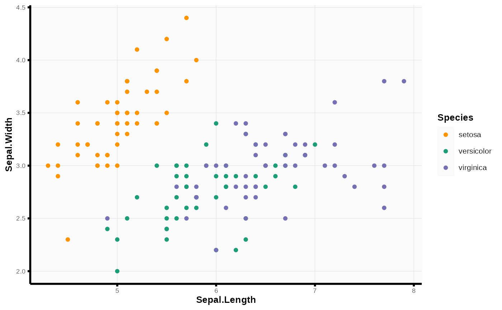
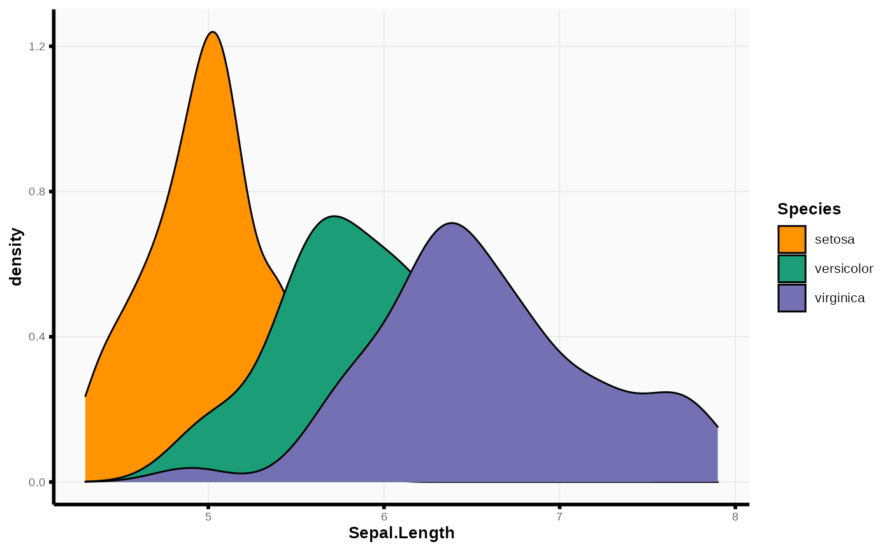

pretty_ggplot_color_fill_themes.RdCustomized pretty ggplot color and fill themes
pretty_ggplot_color(color, viridis = F, option = "plasma", drop = T, ...)
pretty_ggplot_fill(fill, viridis = F, option = "plasma", drop = T, ...)Vector used for color aesthetic. Should match
ggplot2::aes(color = ...) argument.
Logical. Whether or not to use viridis scheme if using
discrete color scheme.
Argument indicating viridis palette name.
Logical; whether or not to drop factors with no observations.
Other arguments to pass to ggplot2::scale_color_manual(),
ggplot2::scale_fill_manual(), viridis::scale_colour_viridis(), or
viridis::scale_fill_viridis().
Vector used for fill aesthetic. Should match
ggplot2::aes(fill = ...) argument.
A ggplot color or fill theme object.
require(ggplot2)
ggplot(iris) +
aes(x = Sepal.Length, y = Sepal.Width, color = Species) +
geom_point() +
pretty_ggplot_theme() +
pretty_ggplot_color(color = iris$Species)

ggplot(iris) +
aes(x = Sepal.Length, fill = Species) +
geom_density() +
pretty_ggplot_theme() +
pretty_ggplot_fill(fill = iris$Species)
